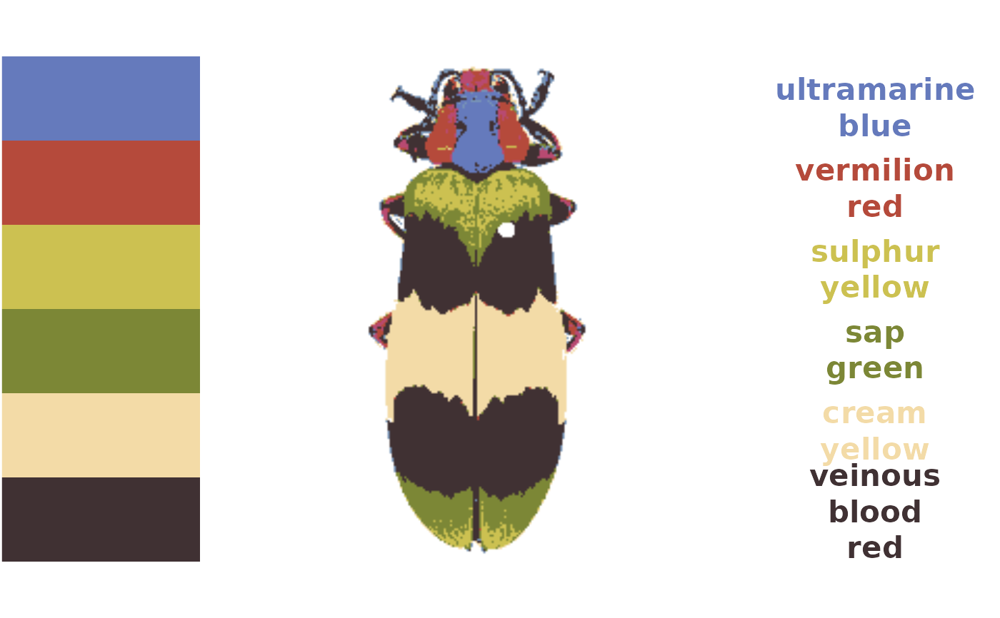
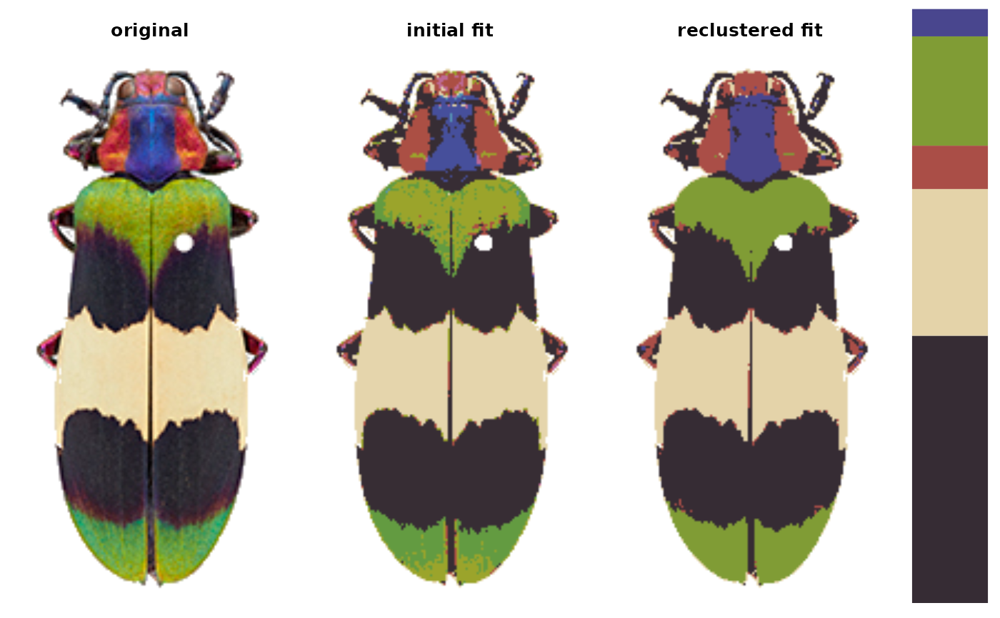
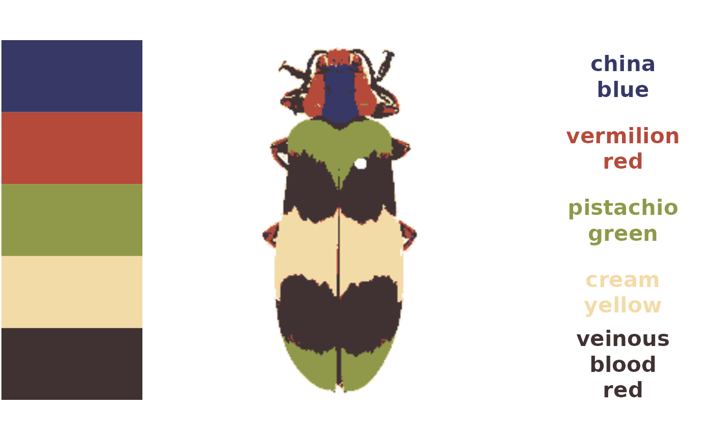

wernerColor.RdRemaps a recolorize object to the colors in Werner's Nomenclature of Colors by Patrick Syme (1821), one of the first attempts at an objective color reference in western science, notably used by Charles Darwin.
wernerColor(recolorize_obj, which_img = "original", n_colors = 5)A recolorize object as returned by
recolorize, recluster, or
imposeColors.
Which image to recolor; one of either "original" or "recolored".
Number of colors to list out in plotting, in order of
size. Ex: n_colors = 5 will plot the 5 largest colors and their names.
All colors are returned as a normal recolorize object regardless of
n_colors; this only affects the plot.
A recolorize object with an additional list element, werner_names,
listing the Werner color names for each center.
See https://www.c82.net/werner/ to check out the original colors.
# get an initial fit:
corbetti <- system.file("extdata/corbetti.png", package = "recolorize")
recolored_corbetti <- recolorize(corbetti, plotting = FALSE)
#>
#> Using 2^3 = 8 total bins
# recolor original image
corbetti_werner <- wernerColor(recolored_corbetti,
which_img = "original",
n_colors = 6)

# we can simplify the colors and then do it again:
corbetti_recluster <- recluster(recolored_corbetti,
cutoff = 45,
plot_hclust = FALSE)

corbetti_werner <- wernerColor(corbetti_recluster,
which_img = "recolored")
